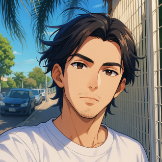
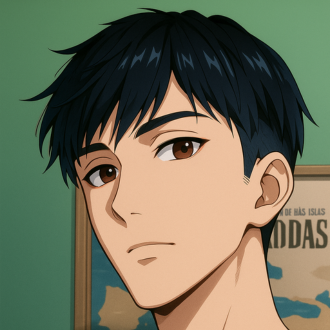
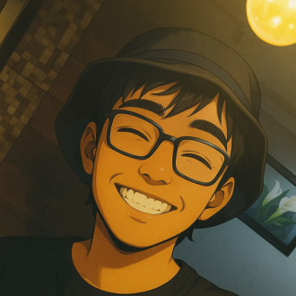
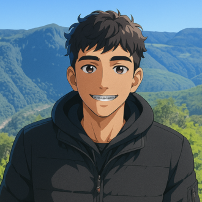
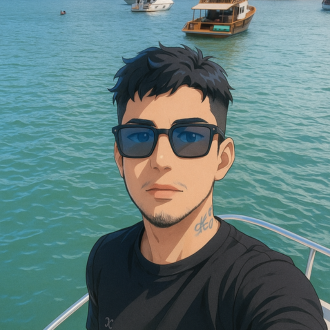

-
Gus
Descrição
Gus é um amigo verdadeiro, sempre disposto a ajudar e nunca deixa ninguém para trás. Apaixonado, vive um romance de cinema com a Manu, sua alma gêmea. Além disso, é muito talentoso na música, sempre transformando emoções em melodias.
-
Arthur
Descrição
Arthur é aquele amigo que conquista todo mundo com a primeira conversa. Sociável e leve, parece que você o conhece há anos, mesmo no primeiro encontro. Sempre presente, é sinônimo de parceria e serenidade — um verdadeiro irmão de jornada.
Lipe
Descrição
Lipe é puro carisma e sorriso fácil. Sempre de bem com a vida, espalha paz e companheirismo por onde passa. Tranquilo e reservado, mas quando o assunto é romance… ele surpreende — o que tem de quieto, tem de conquistador.
Henrique
Descrição
Henrique é o mais tímido do grupo, mas não se engane: sua inteligência fala alto. Querido por todos, tem um humor leve e sempre se diverte nas resenhas com os amigos. Discreto, firme e leal — é aquele tipo de amigo que, depois que entra na sua vida, você não quer mais perder.
Luan
Descrição
Luan é o paizão — sempre presente, rindo alto e zoando com todo mundo. Parceiro de todas as horas, topa qualquer resenha e, quando você mais precisa, ele tá lá. Um amigo de verdade, daqueles que dá pra contar sem pensar duas vezes.